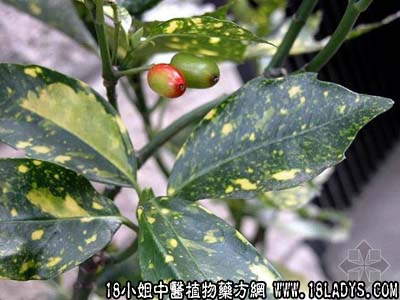

古籍名：桃《神农本草经》。
植物名：桃。
生长环境：本品为落叶小乔木，生于村边坡边，土壤肥沃，阳光充足的地方。
分布：广东各地均有栽培。
入药部分：叶。
采集期：春夏秋采叶。
自采地点：家种。
性味：性平、味苦。
功能：散瘀、解毒、处痰、杀蚊虫。
主治、用量和用法：1、夹色：生用2至4两或干用1至2两，清水煎服；2、跌打瘀患：生用适量，加面粉、白酒煮，敷患处；3、皮肤痕痒：生干可用，煎水外洗；4、猫狗生蚊虱：生用、捣烂、擦身。
验方1：（治跌打肿痛方）桃叶1两、血见愁5钱、透骨消5钱、大还魂5钱、小还魂5钱、清水四碗，煎成一碗服。
（方解）跌打外伤，治宜散瘀。桃叶行瘀，性似桃仁；血见愁、大小还魂凉血；透骨消温散骨骼之瘀，合为凉鲜，温通止痛、散瘀、消肿之剂。
（方歌）跌打外伤瘀痛留，桃叶骨消血见愁，大小还魂来相助，瘀消肿散痛即休。
验方2：（治皮肤痕痒方）桃叶、扁柏、毛麝香各等量，清水煎或，外洗患处。
（方解）风热湿痛着于皮肤，为皮肤痕痒，聚于阴囊、皮、表，称为油滋，治宜疏风解毒。本方以桃叶杀虫、毛麝香疏风，扁柏清热毒。为疏风、清热、解毒、止痒外洗之剂。
（方歌）皮肤湿毒与油滋，桃叶麝香扁柏施，煎水熏洗三五次，解毒止痒兼杀滋。
附录：（桃寄生）治苦劳咳血：干用1至2两，猪瘦肉适量，清水煎服。
参考资料：《广东省中医验方交流汇编》治痔疮方：桃叶适量，捣烂敷患处，或将煮水熏患处。又：治汤火伤方：桃树皮烧成灰，存性，研末调茶油敷之。
《湖南省中医单方验方第一辑》湘阴县中医介绍各类疟疾（寒重者）方：桃树尖1两、辣蓼叶1两、生姜1两、大蒜半个、雄黄5钱、共捣烂用好酒湿敷颈后第一脊柱栏约2小时。
《湖北验方集锦第一集》武汉铁路卫生处献方选编》治手指叉及掌中生黄白脓水疱、奇痒，挑穿流水而痛：鲜桃叶6钱（阴干）、鲜杨树叶（阴干）4钱、猪肝（切片）4两、将二叶共研为细末，和入猪肝，一同捣烂为膏，厚敷患处，一日一换，以愈为止。
《广东省卫生厅防疫局》用桃叶捣烂，加水浸泡或加热煮煎四小时，即成水剂。以之杀蚊蝇，效果显著。试验致蚊幼虫，每公斤水5克，24小时死亡80%，每公斤水10克，12小时全部死亡。
对蛹的效果，24消失达到90%。
本文解释权归中药大全，本文地址：https://www.daquan.com/post/1618.html